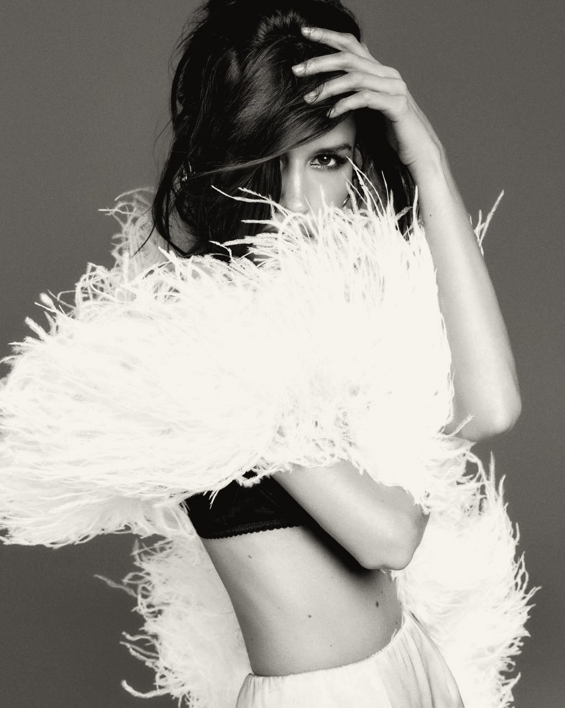
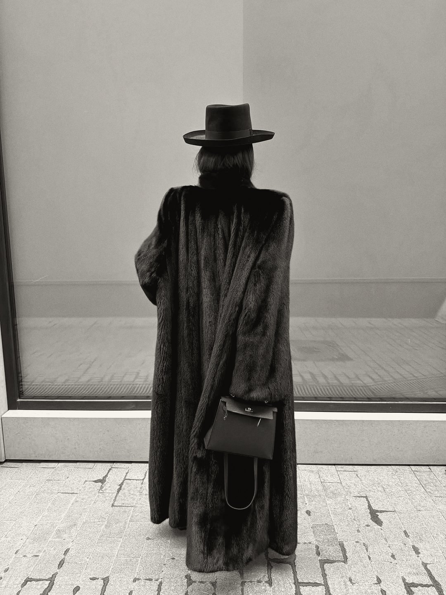
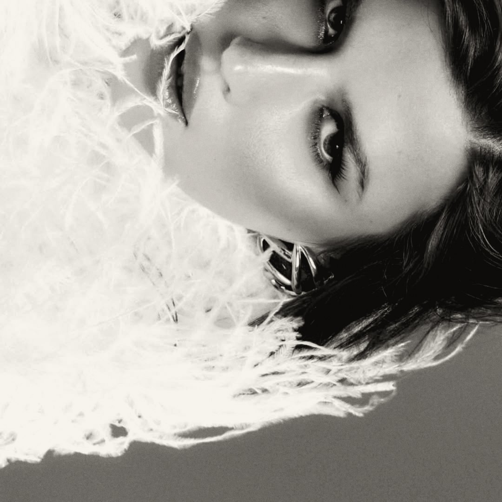
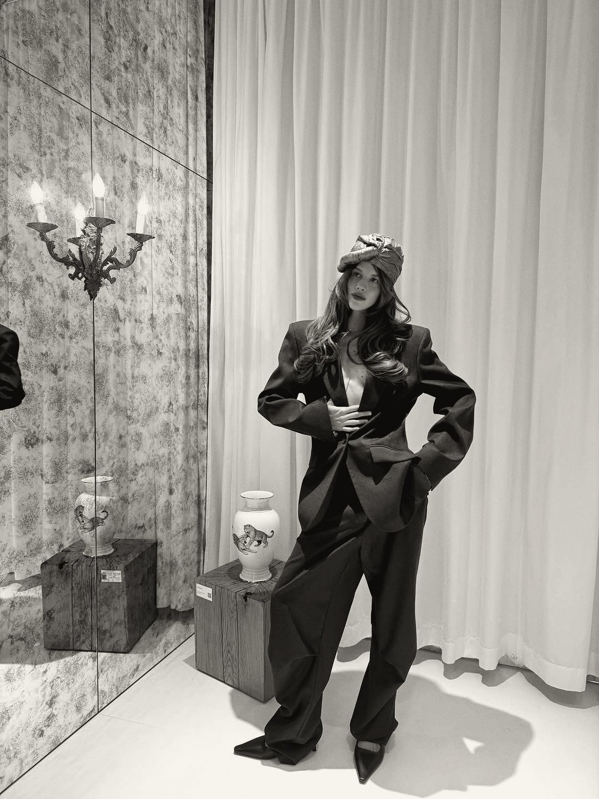
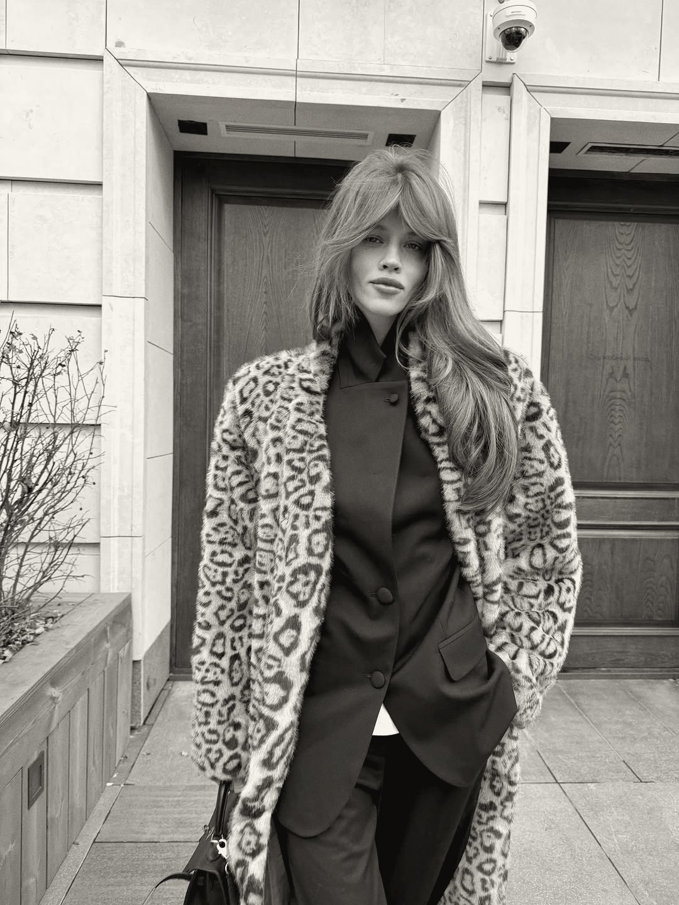
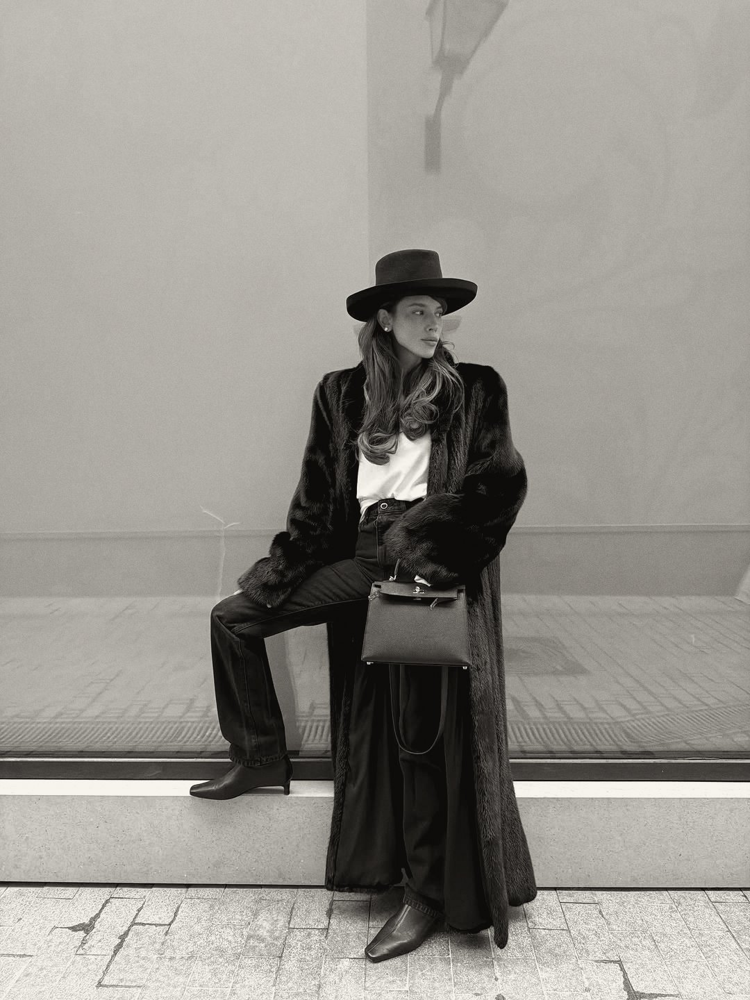

Именная работа
Совместный продукт, капсула, съёмка, меню или запуск. От идеи до характера каждой детали.

Арт-директор.
Соосновательница 2MOOD.
Создательница Department of Aesthetics.

У Полины свой взгляд на привычные вещи.
Одежда, цветы, свечи или ужин с друзьями. В её проектах важны и большая идея, и самая маленькая деталь.
Её историяКоллаборации, в которых чувствуется характер.


До собственного дела были переезды, модные журналы и работа по двенадцать часов на ногах.
Родилась в Москве, выросла в разных уголках страны: от Забайкалья до Урюпинска. Сама записывалась в творческие кружки и зачитывала модные журналы.
Получила диплом учителя истории в Волгограде. В двадцать два года вернулась в Москву и начала свой путь в моде.
Работала ассистентом дизайнера, затем продавцом-консультантом в ЦУМе. После закрытия вместе с коллегами устраивала показы в вещах из люксовых отделов.
Пришла консультантом и участвовала в рекламных съёмках бренда. Работа с одеждой постепенно становилась работой с образом.
За столом в «Чайхоне № 1» на Пушкинской Полина, Кристина Хоронжук и Екатерина Гаюр решили попробовать своё дело. Так началась история 2MOOD.
Авторские вечеринки, где меню, музыка и атмосфера складываются в одну историю. После первого вечера появились приглашения от других заведений.
Коллаборации, арт-дирекшен, творческие консультации и Department of Aesthetics. Проекты, в которых внимание к красивому становится профессией.
Всё началось
с нескольких жакетов.
Первую коллекцию хранили дома, ткани искали на рынке. Полина была одной из трёх соосновательниц и задавала бренду визуальное настроение.
«Сошьём жакеты и, если что, будем сами в них ходить»
Полина о начале 2MOOD

Умение замечать красивое можно развивать. Авторский курс Полины о контенте и внимании к миру вокруг.


Более 5000 выпускников.
И тысячи способов увидеть больше.

Совместный продукт, капсула, съёмка, меню или запуск. От идеи до характера каждой детали.
Взгляд на ваш бренд и социальные сети. Концепции контента, съёмок и новых проектов.